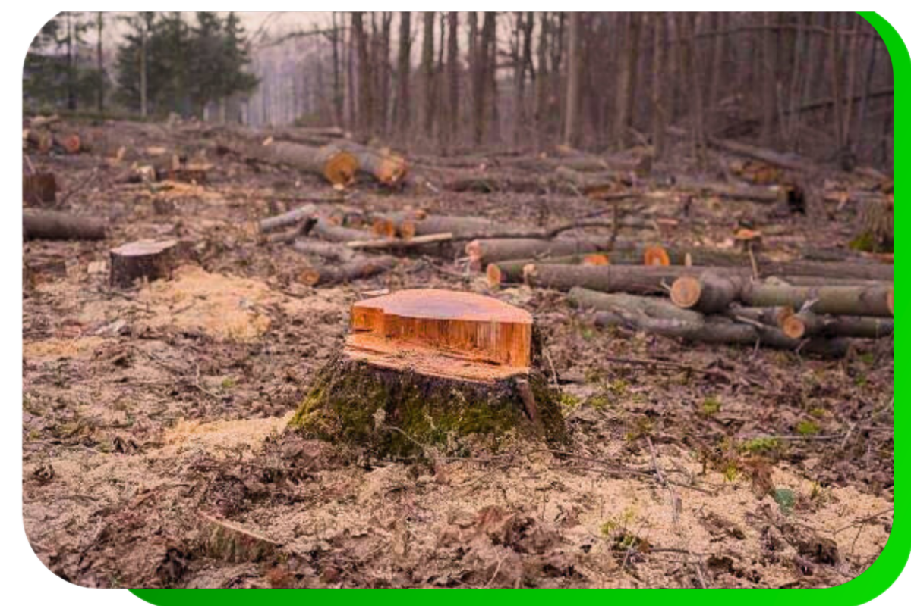

consequências do
desmatamento
O desmatamento provoca graves consequências, como: Perda de biodiversidade: destruição de habitats e extinção de espécies. Mudanças climáticas: aumento do CO₂ e alteração dos padrões de chuva. Degradação do solo: erosão e perda de nutrientes. Impacto nos recursos hídricos: diminuição de rios e contaminação da água. Problemas sociais: deslocamento de comunidades e impactos econômicos. Efeitos na saúde pública: aumento de doenças respiratórias e zoonoses. Esses efeitos afetam o meio ambiente, o clima e a sociedade de forma ampla e negativa.
